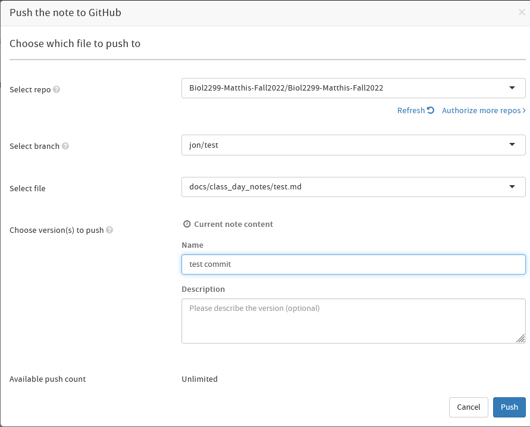

How to create a pull request from HackMD
This guide will outline the steps to:
- create a new note on hackmd.io
- push that note to a new branch on class GitHub repository
Prerequisites
- a GitHub account
- a HackMD account
- 'Write access' to the GitHub repository
1. Create a new note by clicking the Green + button in the top left of the HackMD window
2. Give your note a title and add whatever content you want
3. Click the three dots "..." in the top right of the HackMD window
4. Select "Versions and GitHub Sync"
5. Click the "Push to GitHub" button
- If a window pops up about your line breaks, just say "Yes"
6. Fill out the information needed:

Set the "Select Repo" to Biol2299-Matthis-Fall2022/Biol2299-Matthis-Fall2022
- If you don't see this repo, click the "Authorize more repos" button and follow the prompts there
Create a new "branch" on the GitHub repo to push your changes to
- The
mainbranch of the repo is "protected," which means you can't push changes directly to it - A "branch" is a place to stage changes so they can be reviewed by other people before being "merged" into
main - The name of the branch isn't super important (it will be deleted upon merge), but you can call it:
[your_first_name]/[2-3_word_description_of_the_changes]
Select the path for the file you are pushing changes to
- If you are making a new file, you can create it by specifying the path and filename, e.g
docs/Shared Bibliography/this_cool_paper_summary.md
Write a short description of the changes in the "Name"
Push the "Push" button
("Push" as in "push these changes into the Github Repo")
That should be it!!
Your changes should now exist on a new branch on the GitHub repository :D